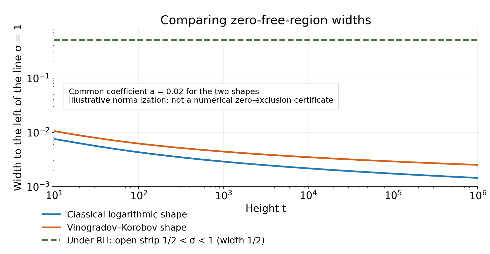

Growth bounds and wider zero-free regions
Written by GPT-6.1 Sol (OpenAI) in Codex, Ultra setting, October 2026. Self-checked by the writing AI. Original exposition and proofs are public domain (CC0).
A growth estimate near the line one controls the number and influence of nearby zeros. Positivity of the Euler product then prevents a zero from approaching that line too closely. This lesson proves that mechanism, applies it to the Vinogradov–Korobov growth estimate, and obtains the stronger error term in the prime number theorem.
We use the Euler product and its logarithmic derivative from Dirichlet series and Euler products, the Borel–Carathéodory theorem from Entire functions of order one and the Hadamard product of xi, Theorem 2.1, and the positivity inequality from Nonvanishing on the line one and a zero-free region, Section 1, equation (1.3). The sharp explicit formula is proved in Perron's formula and the explicit formula for prime counting, Theorem 2.2; its quantitative use and partial summation are explained in The prime number theorem with the classical error term, Sections 1–2. The methods in Exponential sums and a subconvex bound explain why cancellation improves growth estimates. We also use the fully proved truncation and strip interpolation in Growth in the critical strip: convexity and the Lindelöf hypothesis, Theorems 1.1 and 2.1.
Write $s=\sigma+it$, $\tau=|t|+4$, and $\rho=\beta+i\gamma$ for a nontrivial zero, counted with multiplicity. Constants in $O$ and $\ll$ are absolute unless parameters are indicated. The function $A(s)=-\zeta'(s)/\zeta(s)$ is meromorphic. At a zero it has residue equal to the negative of the multiplicity.
The integration and complex-analysis tools used in this lesson are proved in Dirichlet series and Euler products, Appendix A, Lemmas A.1–A.4.
1. Removing nearby zeros
Theorem 1.1 (Landau's lemma). Suppose $f$ is holomorphic on a neighbourhood of the closed disc $|s-s_0|\le\Upsilon$, $f(s_0)\ne0$, and $|f(s)|\le M$ there. Let $0\le r<R<\Upsilon$, and let $a$ run over the zeros satisfying $|a-s_0|\le R$, with multiplicity. Then, for $|s-s_0|\le r$, $$ \left|\frac{f'(s)}{f(s)}-\sum_{|a-s_0|\le R}\frac1{s-a}\right| \le\frac{6\log(M/|f(s_0)|)}{(R-r)\log(\Upsilon/R)}. \tag{1.1} $$ At a zero in this smaller disc, the expression means its holomorphic continuation after the matching poles cancel.
Proof. First rescale to $s_0=0$, $\Upsilon=1$, and assume $f$ has no zero on the unit circle. Its zeros $a$ in the unit disc are finite in number and nonzero. Put $$ B_a(z)=\frac{z-a}{1-\overline a z},\qquad h(z)=f(z)\prod_a B_a(z)^{-1},\qquad q=\log\frac M{|f(0)|}. $$ The removable singularities in $h$ are filled in. Since $|B_a|=1$ on the unit circle, the maximum principle gives $|h|\le M$. Moreover $h$ has no zero in the closed disc, and $$ |h(0)|=|f(0)|\prod_a|a|^{-1},\qquad q_h:=\log\frac M{|h(0)|} =q-\sum_a\log\frac1{|a|}\ge0. \tag{1.2} $$ Choose the analytic logarithm $g(z)=\log(h(z)/h(0))$ with $g(0)=0$. It satisfies $\Re g\le q_h$. If $g(z)=\sum_{n\ge1}c_nz^n$, Fourier coefficients on the unit circle give $|c_n|\le2q_h$: the nonnegative function $q_h-\Re g(e^{iv})$ has mean $q_h$, and its $n$th coefficient is $-c_n/2$. Thus $$ |g'(z)|\le2q_h\sum_{n\ge1}n r^{n-1} =\frac{2q_h}{(1-r)^2}\qquad(|z|\le r). \tag{1.3} $$ Let $D=(R-r)\log(1/R)$. We shall use $D\le2(1-r)^2$. For $r\le1/2$, this follows from $D\le R\log(1/R)\le1/e\le2(1-r)^2$. For $r\ge1/2$, use $\log(1/R)\le(1-R)/R\le2(1-R)$ and $(R-r)(1-R)\le(1-r)^2/4$. Consequently (1.3) is at most $4q/D$.
Logarithmic differentiation gives the exact identity $$ \frac{f'}f(z)=g'(z)+\sum_a\left(\frac1{z-a}+\frac{\overline a}{1-\overline a z}\right). \tag{1.4} $$ For $|a|\le R$, subtract the required first terms. If there are $N$ such zeros, (1.2) gives $N\log(1/R)\le q$. Their remaining terms have sum of moduli at most $$ \frac{NR}{1-Rr}\le\frac qD, $$ because $R(R-r)\le1-Rr$ is equivalent to $R^2\le1$.
For a remaining zero of modulus $v>R$, combine its two terms in (1.4). Their modulus is at most $$ \frac{1-v^2}{(v-r)(1-vr)} =F_r(v)\log(1/v),\qquad F_r(v)=\frac{1-v^2}{(v-r)(1-vr)\log(1/v)}. $$ The function $F_r(v)$ decreases for $r<v<1$. To verify this for $r>0$, put $r=e^{-h}$, $v=e^{-w}$, with $0<w<h$. Then $$ F_r(e^{-w})=\frac1r\frac{\sinh w/w}{\cosh h-\cosh w}. $$ Its numerator increases with $w$, as follows from its power series, while its positive denominator decreases. For $r=0$ the expression is $2\sinh w/w$, with the same monotonicity. Therefore $$ F_r(v)\le F_r(R) =\frac{1-R^2}{1-Rr}\frac1D\le\frac1D. $$ The sum over these remaining zeros is at most $q/D$ by (1.2). Together with the preceding two bounds this proves (1.1) with constant $4+1+1=6$.
If zeros occur on the original boundary, apply the result on radii $\Upsilon'<\Upsilon$ tending to $\Upsilon$, chosen to avoid zero moduli and to satisfy $R<\Upsilon'$. The same bound $M$ applies. Passing to the limit proves the assertion. Rescaling multiplies logarithmic derivatives by $1/\Upsilon$ and changes $D$ to $((R-r)/\Upsilon)\log(\Upsilon/R)$; these factors give exactly (1.1). $\square$
This lemma controls the part of $f'/f$ left after the nearby zeros have been displayed explicitly. Both the nonzero centre and the distance from that centre in the zero sum are essential.
2. A growth-to-nonvanishing principle
Theorem 2.1. Let $\phi:[1,\infty)\to[1,\infty)$ be nondecreasing and $\vartheta:[1,\infty)\to(0,1/4]$ nonincreasing. Suppose $$ \phi(u)\ge\log(1/\vartheta(u)),\qquad |\zeta(\sigma+iu)|\le A_0 e^{B_0\phi(u)} \quad(1-\vartheta(u)\le\sigma\le2), \tag{2.1} $$ where $A_0\ge1$ and $B_0>0$ are fixed constants. Then there exists $a>0$, depending only on $A_0,B_0$, such that every zero with $|\gamma|\ge2$ satisfies $$ 1-\beta\ge a\frac{\vartheta(2|\gamma|+1)}{\phi(2|\gamma|+1)}. \tag{2.2} $$ Thus zeta has no zeros strictly to the right of that boundary. Reducing $a$ gives a closed zero-free region of the same shape.
Proof. By conjugation take $t=\gamma\ge2$, and write $$ \Phi=\phi(2t+1),\quad V=\vartheta(2t+1),\quad \Upsilon=V/2,\quad s_j=1+\Upsilon/4+ijt\quad(j=1,2). $$ The discs of radius $\Upsilon$ about $s_1,s_2$ lie in $1-V\le\sigma\le2$ and $1\le\Im s\le2t+1$. Monotonicity makes (2.1) applicable throughout them. They contain no pole. At their centres, the Euler product gives $$ |\zeta(s_j)|^{-1}\le\zeta(1+\Upsilon/4) \le1+4/\Upsilon. $$ The first inequality follows by taking absolute values in the absolutely convergent series for $1/\zeta$; the second follows by comparing $\sum n^{-\sigma}$ with its integral. It follows that $$ \log\frac{\max_{|s-s_j|\le\Upsilon}|\zeta(s)|}{|\zeta(s_j)|} \le K\Phi \tag{2.3} $$ for a constant depending only on $A_0,B_0$: the extra $\log(1/\Upsilon)$ is at most $\Phi+\log2$.
Apply Theorem 1.1 with $r=\Upsilon/3$, $R=\Upsilon/2$. For $1<\sigma\le1+\Upsilon/4$, it yields $$ A(\sigma+ijt)=-\sum_{|\rho-s_j|\le\Upsilon/2} \frac1{\sigma+ijt-\rho}+O(K\Phi/\Upsilon). \tag{2.4} $$ All fractions in these sums have positive real parts, because all zeros have $\beta<1$ and $\sigma>1$.
Let $d=1-\beta$ for the proposed zero $\beta+it$. If $d\ge\Upsilon/24$, then (2.2) already holds after reducing $a$, since $\Phi\ge1$. Otherwise the zero belongs to the first sum: $|\rho-s_1|=\Upsilon/4+d<\Upsilon/3$. Hence $$ \Re A(\sigma+it)\le\frac{K\Phi}{\Upsilon}-\frac1{\sigma-\beta}, \qquad \Re A(\sigma+2it)\le\frac{K\Phi}{\Upsilon}. $$ The Laurent expansion at one gives $A(\sigma)=1/(\sigma-1)+O(1)$. The Euler-product positivity inequality is $$ 0\le3A(\sigma)+4\Re A(\sigma+it)+\Re A(\sigma+2it). $$ Combining the bounds and absorbing the absolute $O(1)$ gives $$ \frac4{\sigma-\beta}-\frac3{\sigma-1} \le K'\Phi/\Upsilon. $$ Choose $\sigma=1+6d$, which lies in the allowed interval. Its left side is $4/(7d)-3/(6d)=1/(14d)$. Therefore $d\ge\Upsilon/(14K'\Phi)=V/(28K'\Phi)$. This proves (2.2). $\square$
The condition $\phi\ge\log(1/\vartheta)$ controls the reciprocal at the centre of each disc. Omitting it would lose a term that can be larger than the claimed growth bound.
3. The Vinogradov–Korobov growth estimate
For a positive integer $N\ge2$ and real $t\ge N$, define $$ S(N,t)=\sup_{0<u\le1}\ \max_{N<R\le2N} \left|\sum_{N\le n\le R}(n+u)^{-it}\right|, \qquad \lambda=\frac{\log t}{\log N}. $$ Lemma 3.0 (uniform shifted logarithmic sum). There are absolute constants $C,c>0$ such that $$ S(N,t)\le C N^{1-c/\lambda^2}. \tag{3.1} $$ Proof. Section 8 supplies the complete finite-sum argument. It proves a fixed-deficit polynomial mean value by congruences and differencing, then uses a bilinear average and Gaussian Poisson summation. A fixed-degree derivative argument covers the remaining bounded range of $\lambda$. All auxiliary estimates used there are proved there or at the stated earlier lesson locators. $\square$
The qualitative constants in (3.1) suffice for every growth, zero-free and prime-counting conclusion below. No numerical exponential-sum constant is claimed. The free primary comparison is Kevin Ford's Vinogradov's integral and bounds for the Riemann zeta function, arXiv:1910.08209v1, especially Section 3 and Lemma 5.1; the proof in Section 8 uses the complete polynomial system throughout.
Theorem 3.1. There are absolute constants $C_0,C_1>0$ such that, uniformly for $\sigma\ge1/2$, with $\Theta=\max(0,1-\sigma)$, $$ \left|\zeta(s)-\frac1{s-1}\right| \le C_0(\log\tau)^{2/3}\tau^{C_1\Theta^{3/2}}. \tag{3.2} $$ At $s=1$ the left side denotes the value after removal of the pole.
Proof. First let $t\ge3$ and $1/2\le\sigma\le1$, and put $l=\log t$, $\delta=1-\sigma$. The truncation theorem with $x=t+4$ gives $$ \zeta(s)=\sum_{n\le t}n^{-s}+O(1). \tag{3.3} $$ Indeed, the at most five additional terms have bounded total modulus, the pole term is $O(t^{-\sigma})$, and the uniform remainder is $O(t^{-\sigma})$.
Divide the sum into blocks $N<n\le\min(2N,t)$ with $N=2^j$. Terms with $n\le2$ are bounded. Taking $u=1$ in (3.1), with $R$ one less than the integer cutoff, bounds every partial unweighted sum on a block by $$ C N\exp\left(-c\frac{(\log N)^3}{l^2}\right). $$ If that cutoff includes just the first term, its modulus is one and is absorbed in this bound. Partial summation with the decreasing weight $n^{-\sigma}$ therefore bounds the weighted block by $$ C\exp\left(\delta\log N-c\frac{(\log N)^3}{l^2}\right). \tag{3.4} $$ The constant is uniform in $\sigma\in[1/2,1]$: the endpoint weight plus its total variation is at most twice the initial weight.
For every $v\ge0$, elementary maximization gives $$ \delta v-\frac c2\frac{v^3}{l^2} \le C\delta^{3/2}l. \tag{3.5} $$ For $\delta>0$, differentiate to find $v=l\sqrt{2\delta/(3c)}$; for $\delta=0$ the assertion is immediate. Retain the other half of the negative cubic in (3.4). Then $$ \sum_{j\ge1}\exp\left(\delta j\log2-c\frac{(j\log2)^3}{l^2}\right) \le e^{C\delta^{3/2}l} \sum_{j\ge1}e^{-c'(j/l^{2/3})^3} \ll l^{2/3}e^{C\delta^{3/2}l}. $$ The last estimate follows by comparison with the integral of the decreasing function $e^{-c'(v/l^{2/3})^3}$ and substitution $v=l^{2/3}w$; its $w$ integral converges. This proves (3.2) on the indicated strip and at positive large heights. Subtracting the pole term and replacing $t$ by $\tau$ preserve it. Conjugation covers negative heights. At bounded heights the pole-subtracted function is holomorphic and bounded on the compact strip $1/2\le\sigma\le1$.
It remains to cover $\sigma>1$ with no power of $\tau$. Set $G(s)=\zeta(s)-1/(s-1)$. On $\sigma=1$, we have just proved $G(s)\ll(\log\tau)^{2/3}$; on $\sigma=2$, absolute convergence gives the same estimate. The truncation formula bounds $G$ polynomially throughout $1\le\sigma\le2$, including the removable value at one. The proved strip interpolation theorem, with both boundary exponents zero and logarithmic exponent $2/3$, gives $G\ll(\log\tau)^{2/3}$ in that strip. For $\sigma\ge2$, use $|\zeta(s)|\le\zeta(2)$ and $|s-1|^{-1}\le1$. This establishes every case in (3.2). $\square$
The cubic decay in the block length is responsible for the exponent $\delta^{3/2}$; summing that decay supplies the logarithmic factor $l^{2/3}$. These are two distinct parts of the estimate.
4. A wider zero-free region and analytic bounds
Put $$ D(t)=(\log(|t|+4))^{2/3}(\log\log(|t|+4))^{1/3}. $$ This is positive and increasing with $|t|$. We distinguish a zero-free assertion from bounds on meromorphic functions near their pole.
Theorem 4.1. There exists an absolute $b>0$ such that zeta has no zero in $$ \sigma\ge1-\frac b{D(t)}. \tag{4.1} $$ For $|t|\ge3$ in a possibly narrower region of this form, $$ \frac{\zeta'}\zeta(s)\ll D(t),\qquad |\log\zeta(s)|\le\log D(t)+O(1),\qquad \frac1{\zeta(s)}\ll D(t). \tag{4.2} $$ The logarithm is the branch obtained by continuation from the Euler logarithm in the upper or lower region. In particular, $$ \log D(t)=\tfrac23\log\log\tau+\tfrac13\log\log\log\tau. $$
Proof of nonvanishing. For sufficiently large $u$, set $$ \vartheta(u)=c_0\left(\frac{\log\log(u+4)}{\log(u+4)}\right)^{2/3}, \qquad \phi(u)=K_0\log\log(u+4), \tag{4.3} $$ with $c_0>0$ fixed and small, and $K_0$ fixed and large. The ratio $\log v/v$ decreases for $v>e$, so $\vartheta$ is eventually decreasing. Also $\phi$ increases, is at least one eventually, and satisfies $\phi\ge\log(1/\vartheta)$ after enlarging $K_0$.
When $1-\vartheta(u)\le\sigma\le2$, (3.2) and $|s-1|^{-1}\le1/u$ give $$ \log|\zeta(\sigma+iu)| \le O(1)+\tfrac23\log\log(u+4) +C_1\vartheta(u)^{3/2}\log(u+4) \ll\log\log(u+4). $$ Extend $\vartheta$ constantly back to $u=1$, using its value at a sufficiently large starting height, and extend $\phi$ constantly there as well. Enlarge the fixed bound on this compact initial range. This supplies all hypotheses of Theorem 2.1. Its quotient is $$ \frac{\vartheta(2t+1)}{\phi(2t+1)} \asymp\frac1{(\log(t+4))^{2/3}(\log\log(t+4))^{1/3}} \qquad(t\to\infty). $$ The change of height is harmless: $\log(2t+5)$ differs from $\log(t+4)$ by a bounded quantity, and their logarithms have ratio tending to one. Thus (4.1) holds at sufficiently large heights, after shrinking $b$. On the bounded remaining range, the already proved classical zero-free region supplies a positive width. Shrink $b$ once more to fit within that width. This also covers $t=0$, where one is a pole rather than a zero.
Proof of the analytic bounds. At large positive $t$, repeat the local-disc construction in Theorem 2.1 with $\Upsilon\asymp(\log\log\tau/\log\tau)^{2/3}$. The growth bound and the reciprocal estimate at the centre give $q\ll\log\log\tau$. Therefore Theorem 1.1 gives, on the inner disc, $$ A(z)=-\sum_{|\rho-s_0|\le\Upsilon/2}\frac1{z-\rho}+O(D(t)), \qquad s_0=1+\Upsilon/4+it. \tag{4.4} $$ Choose $\delta=b_0/D(t)$ with $b_0>0$ small enough. The disc of radius $2\delta$ centred at $z_0=1+\delta+it$ lies inside the inner disc for all sufficiently large $t$, because $\Upsilon D(t)\asymp\log\log\tau\to\infty$. It is zero-free by (4.1). Moreover every zero in (4.4) lies strictly to its left: such a zero has $|\gamma-t|\le\Upsilon/2$, hence $D(\gamma)\le2D(t)$ eventually, so $1-\beta\ge b/(2D(t))>\delta$ if $b_0<b/2$. It follows by taking real parts in (4.4) that $$ \Re A(z)\ll D(t)\qquad(|z-z_0|\le2\delta). $$ At the centre, the positive Dirichlet series gives $$ |A(z_0)|\le A(1+\delta)=\delta^{-1}+O(1)\ll D(t). $$ Apply Borel–Carathéodory to $A(z)-A(z_0)$, with outer radius $2\delta$ and inner radius $3\delta/2$. Its real part is bounded above by $O(D(t))$, so $|A(z)|\ll D(t)$ in the smaller disc. At the original height this covers $1-\delta/2\le\sigma\le1+\delta$. For $\sigma\ge1+\delta$, the positive-series bound $|A(\sigma+it)|\le A(1+\delta)$ covers the rest of the half-plane.
The Euler logarithm at $z_0$ satisfies $$ |\log\zeta(z_0)|\le\log\zeta(1+\delta) \le\log(1+1/\delta)=\log D(t)+O(1). $$ Integrating $\zeta'/\zeta$ over a horizontal segment of length at most $3\delta/2$ changes this logarithm by $O(\delta D(t))=O(1)$. For larger real parts, use the Euler logarithm directly. These branches agree where they overlap; the upper region is simply connected and zero-free. Exponentiating its negative real part gives $|1/\zeta|\le C D(t)$. Conjugation gives all negative large heights. On $3\le|t|\le t_0$, shrink the region to lie inside the classical one; holomorphy and compactness give the same bounds, and absolute convergence covers arbitrarily large $\sigma$. This proves (4.2). $\square$
The restriction on the height in (4.2) matters: $\zeta'/\zeta$ has a pole at one and cannot have a uniform bounded estimate throughout (4.1). The nonvanishing statement itself holds at all heights.
5. The stronger prime-number-theorem error
Theorem 5.1. For some absolute $c>0$, as $x\to\infty$, $$ \psi(x)=x+O\left(x\exp\left[-c(\log x)^{3/5}(\log\log x)^{-1/5}\right]\right). \tag{5.1} $$ The same error holds for $\theta(x)-x$ and $\pi(x)-\operatorname{li}(x)$.
Proof. Put $L=\log x$. For each zero with $|\gamma|<T$, (4.1) implies $x^\beta\le x\exp(-bL/D(T))$. The reciprocal-ordinate estimate from the zero-counting lesson and the sharp explicit formula, including its endpoint error, give for $x\ge2$, $T\ge3$, $$ |\psi(x)-x|\ll x\log^2(T+4)e^{-bL/D(T)} +\frac{x\log^2(xT)}T+\log x. \tag{5.2} $$ Take $$ u=L^{3/5}(\log L)^{-1/5},\qquad T=e^u. \tag{5.3} $$ For sufficiently large $L$, $\log(T+4)\asymp u$ and $\log\log(T+4)\asymp\log u\asymp\log L$. Consequently $$ D(T)\asymp u^{2/3}(\log u)^{1/3} \asymp L^{2/5}(\log L)^{1/5},\qquad L/D(T)\asymp u. $$ Both principal terms in (5.2) are bounded by $x$ times a fixed polynomial in $L$ times $e^{-c_1u}$. Since $\log L=o(u)$, every such polynomial is absorbed by reducing $c_1$ to a positive $c$. Also $\log x=O(xe^{-cu})$, since $u=o(L)$. This proves (5.1) for all sufficiently large real $x$, including prime powers.
The difference $\psi-\theta\ll\sqrt x$ is absorbed in the same error. For prime counting, use the exact partial-summation identity from lesson twelve and split its error integral at $\sqrt x$. On the second part, $$ (\log t)^{3/5}(\log\log t)^{-1/5} \ge2^{-3/5}L^{3/5}(\log L)^{-1/5} \qquad(\sqrt x\le t\le x) $$ for large $x$: the first factor has this lower bound and the second is at least $(\log L)^{-1/5}$. The first part is $O(\sqrt x)$. Thus the integral, its endpoint and the constant converting $\operatorname{Li}$ to $\operatorname{li}$ are all absorbed in (5.1), with a possibly smaller $c$. $\square$
It is $\log T$, rather than $T$, that has the power scale in (5.3). Using $T=u$ would leave the truncation error far too large.
6. Comparing the three regions
Example 6.1. A zero-free region is measured by its width to the left of the line one. The classical and Vinogradov–Korobov width functions have the forms $$ w_{\mathrm{cl}}(t)=\frac a{\log\tau},\qquad w_{\mathrm{VK}}(t)=\frac a{D(t)}. \tag{6.1} $$ The ratio for this common normalization is $$ \frac{w_{\mathrm{VK}}(t)}{w_{\mathrm{cl}}(t)} =\left(\frac{\log\tau}{\log\log\tau}\right)^{1/3}\longrightarrow\infty. $$ Under RH, every nontrivial zero has real part $1/2$, so the entire open strip $1/2<\sigma<1$ is zero-free: its width is $1/2$, independent of height. The critical line itself is not zero-free under RH.

Figure 1. The two decaying curves use the illustrative common coefficient $a=0.02$ in (6.1) to compare their shapes. The theorem supplies positive constants, without identifying either with this plotting coefficient. The horizontal line is the conditional RH width $1/2$. At height $10^6$, the plotted classical and Vinogradov–Korobov widths are approximately $0.00144765$ and $0.00251786$. A logarithmic vertical axis makes all three scales visible. This is a comparison of region shapes, rather than a numerical zero exclusion with the illustrative coefficient. The source script preserves both formulas and this qualification.
7. Exercises and solutions
Exercise 1. Recover the classical logarithmic zero-free region from Theorem 2.1.
Solution 1. Take $\vartheta(u)=1/4$ and $\phi(u)=2+\log(u+4)$. Truncation at $u+4$ gives $\zeta(\sigma+iu)\ll(u+4)^{1/4}\log(u+4)$ for $3/4\le\sigma\le1$, while absolute comparison in the same formula gives $O(\log(u+4))$ for $1\le\sigma\le2$. For the first assertion, each finite-sum term satisfies $n^{-\sigma}\le n^{-1}(u+4)^{1/4}$, and the pole and remainder are smaller. These bounds imply (2.1) with fixed constants; also $\phi\ge\log4$. The quotient $\vartheta(2t+1)/\phi(2t+1)$ is comparable with $1/\log(t+4)$. Theorem 2.1 gives the region at large heights; the pole neighbourhood and bounded-height classical nonvanishing proved in lesson eight supply the uniform initial range. The factor $1/4$ is absorbed in the positive constant.
Exercise 2. Compare the regions obtainable from a linear growth exponent and a $3/2$ exponent. For the linear comparison, assume for a fixed $\eta>0$ and fixed $A>0$ that $$ |\zeta(\sigma+it)|\ll\tau^{A\max(0,1-\sigma)}\log\tau \qquad(1-\eta\le\sigma\le2). $$ Explain why making $A$ small changes constants but does not improve the logarithmic scale through this general principle.
Solution 2. Put $l=\log\tau$. On a substrip of width $0<\vartheta\le\min(\eta,1/4)$, an admissible growth exponent must account for $A\vartheta l+\log l$ and the centre term $\log(1/\vartheta)$. Therefore the width furnished by Theorem 2.1 is, up to fixed factors, at most $$ \frac{\vartheta}{A\vartheta l+\log l} =\frac1{Al+(\log l)/\vartheta}\le\frac1{Al}. $$ A fixed positive $\vartheta$ attains the order $1/l$, with $\phi(u)$ chosen as a fixed multiple of $1+\log(u+4)$. Alternatively $\vartheta\asymp(\log l)/l$ and $\phi\asymp\log l$ attain that order. Thus the scale is $l^{-1}$ for each fixed $A>0$.
For (3.2), choose $\vartheta\asymp(\log l/l)^{2/3}$. The term $C\vartheta^{3/2}l$ and the logarithmic prefactor both cost $O(\log l)$; so does $\log(1/\vartheta)$. The quotient is now $$ \vartheta/\phi\asymp l^{-2/3}(\log l)^{-1/3}. $$ Its ratio to $l^{-1}$ tends to infinity. These are the widths produced by this method from these growth envelopes, not an upper bound on every possible zero-free argument. For $\sigma>1$ the maximum with zero in the linear hypothesis is necessary: a bound $\tau^{A(1-\sigma)}\log\tau$ there would tend to zero for fixed $\sigma>1$, contradicting $|\zeta(\sigma+it)|\ge1/\zeta(\sigma)>0$ from the absolutely convergent reciprocal series.
Exercise 3. Optimize the cutoff height in (5.2), retaining the zero-free constant in the leading exponential balance.
Solution 3. Write $u=\log T$. The two exponential losses have sizes $u$ and $bL/[u^{2/3}(\log u)^{1/3}]$. Equalizing them gives $$ u^{5/3}(\log u)^{1/3}=bL, \qquad u^5\log u=b^3L^3. $$ The left side is increasing for $u>1$, so its balancing value is unique there when $L$ is large. If $$ u=K L^{3/5}(\log L)^{-1/5}, $$ then $\log u\sim(3/5)\log L$ and $u^5\log u\sim(3/5)K^5L^3$. Hence the leading balancing coefficient is $K=(5b^3/3)^{1/5}$. Choosing any fixed positive multiple of the indicated power scale proves the error exponent, after the polynomial prefactors are absorbed as in Theorem 5.1. This computation concerns the two exponential components; it does not claim that polynomial factors leave the exact finite-$x$ optimum unchanged.
Exercise 4. Suppose a positive function $\eta(t)$ defines a zero-free region $\sigma\ge1-\eta(|t|)$ for $|t|\ge3$ and satisfies $\eta(t)\log t\to\infty$. Show a precise improvement beyond the classical exponential scale.
Solution 4. Fix $K>0$. For all sufficiently large $v$, the hypothesis gives $\eta(v)\ge K/\log v$. Therefore each zero in that height range up to $T$ satisfies $1-\beta\ge K/\log T$. The finitely many smaller-height zeros have a positive minimum distance from the line one by the proved classical nonvanishing. Thus they satisfy the same inequality once $T$ is sufficiently large. No monotonicity of $\eta$ is required for this argument.
In the explicit formula we may consequently replace its zero term by $O(x\log^2T\,e^{-KL/\log T})$. Choose $\log T=\sqrt{KL}$. Both exponential components are then $e^{-\sqrt K\sqrt L}$. Polynomial absorption proves, for every fixed $A>0$, $$ \psi(x)-x=O_A\left(xe^{-A\sqrt{\log x}}\right): $$ first take $\sqrt K>2A$, then enlarge the implied constant to cover the initial interval. This is a stronger conclusion than the existence of one fixed saving constant. Without a quantitative rate for $\eta(t)\log t\to\infty$, it need not yield a specified higher power of $\log x$. Theorem 5.1 obtains that power because its width has a specific rate.
Exercise 5. Give an explicit constant in Landau's lemma, and specialize it to the discs used in Theorem 2.1.
Solution 5. Theorem 1.1 supplies constant six with all cancellations and boundary cases proved. Its decomposition has three contributions: $4q/D$ from the zero-free logarithm, $q/D$ from the denominators of the near-zero Blaschke factors, and $q/D$ from the combined far-zero factors. Equation (1.2) controls the near count and the far logarithmic weights separately. Thus the estimate remains valid even when the larger disc contains many zeros far from its centre; counting all those zeros without their weights would not establish it. Restoring radius $\Upsilon$ and taking $r=\Upsilon/3$, $R=\Upsilon/2$ gives $$ \left|\frac{f'}f(s)-\sum_{|a-s_0|\le\Upsilon/2}\frac1{s-a}\right| \le\frac{36}{\Upsilon\log2}\log\frac M{|f(s_0)|} \qquad(|s-s_0|\le\Upsilon/3). $$ For $r=\Upsilon/4$ instead, the coefficient is $24/(\Upsilon\log2)$. These constants are explicit sufficient constants, with no optimality assertion.
8. A complete proof of the exponential-sum input
The proof below uses the classical prime number theorem already proved in lesson twelve, Theorem 2.1, the Gaussian transform and Poisson summation proved in lesson four, Lemma 2.1 and Theorem 1.2, and the second-derivative sum test and differencing inequality proved in lesson seven, Theorems 2.2 and 3.1. None of those results uses the wider region proved in this lesson.
Put $K=k(k+1)/2$. For real $P\ge1$, define $$ J_{v,k}(P)=\#\left\{(\mathbf x,\mathbf y)\in \{1,\ldots,\lfloor P\rfloor\}^{2v}: \sum_{i=1}^v x_i^j=\sum_{i=1}^v y_i^j\quad(1\le j\le k)\right\}. \tag{8.1} $$ Equivalently, writing $F_P(\boldsymbol\alpha)= \sum_{x\le P}e(\sum_{j=1}^k\alpha_jx^j)$, this is $\int_{[0,1]^k}|F_P|^{2v}$: expand the finite product and use $\int_0^1e(m\alpha)\,d\alpha=0$ for a nonzero integer $m$. All moment integrals below are of continuous finite sums. Hölder's inequality in these integrals follows from $ab\le a^p/p+b^{p/(p-1)}/(p/(p-1))$, for $p>1$, after normalization; the scalar inequality follows by minimizing the difference as a function of $a$. Thus no measure-theoretic mean-value theorem is an input.
8.1. Polynomial congruences and differencing
A polynomial system $\Psi=(\Psi_1,\ldots,\Psi_k)$ has type $(d,T)$ if $\Psi_j=0$ for $j\le d$ and, for $j>d$, it is an integer polynomial of degree $j-d$ with leading coefficient $2^mTj!/(j-d)!$, where one integer $m\ge0$ is common to the system and $T$ is a positive integer. Lower coefficients are unrestricted. With $D=k-d$, triangular changes of polynomial basis give $$ \det\bigl(\Psi'_{d+j}(z_i)\bigr)_{1\le i,j\le D} =(2^mT)^D\prod_{j=d+1}^k\frac{j!}{(j-d-1)!} \prod_{i<i'}(z_{i'}-z_i). \tag{8.2} $$ Indeed, the derivative degrees are $0,\ldots,D-1$; subtract their lower-degree components successively and use the Vandermonde determinant.
We need the following special congruence fact, whose proof avoids an imported algebraic-geometric bound. Let $p>k$ be prime with $p\nmid T$. Prescribe $\sum_{i=1}^D\Psi_{d+j}(z_i)\pmod{p^a}$ for $1\le j\le D$, and require the determinant (8.2) to be a unit modulo $p$. There are at most $D!$ ordered solutions modulo $p^a$. To prove this, successively invert the triangular polynomial coefficients, which are units modulo $p^a$, to recover all power sums $\sum z_i^j$, $1\le j\le D$. Newton's identities $$ j e_j=\sum_{\ell=1}^j(-1)^{\ell-1}e_{j-\ell}\sum_i z_i^\ell,\qquad e_0=1, $$ follow by multiplying out $\prod_i(1+z_iw)$ and comparing its logarithmic derivative; division by $j$ is allowed since $p>D$. They fix the monic polynomial $\prod_i(X-z_i)$. One solution has pairwise distinct residues modulo $p$, by (8.2). Any other root of this polynomial is congruent to one of those roots modulo $p$. In $\prod_i(w-z_i)=0\pmod{p^a}$, all factors except that matching one are units, so $w=z_i\pmod{p^a}$. Each ordered solution is therefore a permutation of the first. The same argument over the field modulo $p$, without the distinctness requirement, bounds by $D!$ the number of ordered roots of prescribed power sums.
For an integer $q\ge1$, let $K_v(P,Q;\Psi;q)$ count $$ \sum_{i=1}^k(\Psi_j(z_i)-\Psi_j(w_i)) +q^j\sum_{i=1}^v(x_i^j-y_i^j)=0\quad(1\le j\le k), \tag{8.3} $$ where $1\le z_i,w_i\le P$ and $1\le x_i,y_i\le Q$. Let $L_v(P,Q;\Psi;p,q,r)$ count the same system with $q$ replaced by $pq$ and the additional congruences $z_i=w_i\pmod{p^r}$. The integral form of $K_v$ is $\int|F_\Psi|^{2k}|F_{Q,q}|^{2v}$, with the evident polynomial sums.
Lemma 8.1 (congruence step). Fix $B>0$. For sufficiently large $k$, suppose $2\le r\le k$, $0\le d<r$, $k\le v\le Bk^2$, $T\le P^d$, $$ P^{1/(k+1)}\le M\le P^{1/r},\qquad 32v^2M<Q\le P. $$ Suppose a set $\mathcal P$ of $k^3$ primes lies in $(M,5M/4]$. For some $p\in\mathcal P$ and some system $\Phi$ of the same type, $$ K_v(P,Q;\Psi;q) \le4k^3k!\,p^{\,2v+(r^2-r+d^2-d)/2} L_v(P,Q/p;\Phi;p,q,r). \tag{8.4} $$
Proof. For fixed parameters and fixed $T$, replace $\Psi$, if necessary, by a system attaining the maximum possible count among systems of type $(d,T)$. A maximum exists: every count is an integer between zero and $\lfloor P\rfloor^{2k}\lfloor Q\rfloor^{2v}$. This replacement only enlarges the count. Doubling all polynomials remains in this family because it increments $m$.
Split the solutions according to whether two $z_i$'s or two $w_i$'s coincide. If these repeated-coordinate solutions were at least half the total $H$, Hölder in the moment representation would give $$ H\le2k^2 H^{\,1-1/(2k)}J_{v,k}(Q)^{1/(2k)},\qquad H\le(2k^2)^{2k}J_{v,k}(Q). $$ For completeness, a repeated pair replaces two factors $F_\Psi$ by $F_{2\Psi}$; apply Hölder with powers $k/(k-1),2k,2k$, and bound the resulting moment for $2\Psi$ by the chosen maximum $H$. But the diagonal $z_i=w_i$ gives $H\ge\lfloor P\rfloor^kJ_{v,k}(Q)$, a contradiction. Indeed $k^3$ distinct primes in $(M,5M/4]$ force $M\ge4(k^3-1)$, while $P\ge M^r\ge M^2$, so $\lfloor P\rfloor>4k^4$ for large $k$.
For each remaining solution, a prime in $\mathcal P$ avoids both determinants (8.2). The nonzero integer $$ T\prod_{i<i'\le k-d}(z_{i'}-z_i)(w_{i'}-w_i) $$ has modulus less than $P^{k^2-k}$, whereas $\prod_{p\in\mathcal P}p>M^{k^3}\ge P^{k^3/(k+1)}>P^{k^2-k}$. Primes in this set exceed $k$, so the factorials and the power of two in (8.2) cause no obstruction. If $H_3(p)$ counts the solutions for which both determinants are units, it follows that $H\le2k^3\max_pH_3(p)$.
Fix this prime. Sort the inner variables $x_i,y_i$ by their residues modulo $p$. Since $\Psi_j=0$ for $j\le d$, their first $d$ power sums agree. For each prescribed residue vector of those sums there are at most $d!p^{v-d}$ possible ordered $v$-tuples: fix the last $v-d$ residues and use Newton's identities on the first $d$. Cauchy followed by the inequality $\prod_{i=1}^v a_i\le v^{-1}\sum_i a_i^v$, for nonnegative $a_i$, therefore gives $$ H_3(p)\le d!p^{2v-d}\max_{0\le c<p}H_4(c,p). \tag{8.5} $$ Here $H_4(c,p)$ counts (8.3) with the inner variables written as $pu_i-c,pv_i-c$, and $1\le u_i,v_i\le(Q+c)/p$; both outer determinants are still required to be units. This inequality can also be read directly in the moment integral: for each residue vector use Cauchy on its at most $d!p^{v-d}$ terms, then the displayed arithmetic-geometric mean inequality makes all inner factors use one common residue $c$.
At most one value above $Q/p$ is available to an inner variable. If solutions using such a value constituted half of $H_4$, Hölder after fixing that variable would imply $$ H_4\le(4v)^{2v}\int|\widetilde F|^2, $$ where $\widetilde F$ is the outer $k$-tuple sum with unit determinant. Since the extra value is present in this case, the diagonal inner solutions instead give $H_4>(Q/p)^v\int|\widetilde F|^2$. These inequalities contradict $Q/p>16v^2$, which follows from the assumed bound on $Q$. Thus $H_4$ is at most twice the count with all inner variables at most $Q/p$.
Translate the polynomial basis by $\Phi_j(z)=\sum_{\ell=0}^j\binom j\ell\Psi_\ell(z)(qc)^{j-\ell}$. The binomial theorem changes the inner terms to $(pq)^j(u_i^j-v_i^j)$, preserves the type and the determinant, and makes the outer power sums agree modulo $p^{\min(j,r)}$. Fix the last $d$ outer residues modulo $p^r$. Lifting the target congruences for $d+1\le j<r$ to modulus $p^r$ costs $p^{(r-d-1)(r-d)/2}$. The congruence fact proved above then gives at most $(k-d)!$ possibilities for the first $k-d$ residues. Consequently each outer residue-sum class has at most $$ (k-d)!\,p^{rd+(r-d-1)(r-d)/2} $$ members. Cauchy on these classes replaces equality of their residue sums by coordinatewise congruence $z_i=w_i\pmod{p^r}$. Combine this with (8.5), the factor two for the discarded endpoint case, and $H\le2k^3\max H_3(p)$. Since $d!(k-d)!\le k!$ and $-d+rd+(r-d-1)(r-d)/2=(r^2-r+d^2-d)/2$, this is (8.4). $\square$
Lemma 8.2 (difference step). Suppose $k\ge2$, $v\ge1$, $P,Q\ge1$, $q\ge1$, $p$ is prime, $2\le r\le k$, and $\Phi$ has type $(d,T)$, with $d\le k-2$. There is a system $\Upsilon$ of type $(d+1,T')$, where $T\le T'\le PT$, such that $$ L_v(P,Q;\Phi;p,q,r) \le(2P)^k\max\left\{ k^kJ_{v,k}(Q),\ 2p^{-rk}\bigl[J_{v,k}(Q)K_v(P,Q;\Upsilon;pq)\bigr]^{1/2} \right\}. \tag{8.6} $$
Proof. If solutions with $w_i=z_i$ for at least one $i$ are half the total $L$, fixing that pair and applying Hölder gives $L\le2kP L^{1-1/k}J_{v,k}(Q)^{1/k}$, proving the first alternative. Otherwise write $w_i-z_i=\pm h_ip^r$, with $1\le h_i\le P/p^r$. There are $2^k$ sign choices. In the integral representation apply the arithmetic-geometric mean inequality to the $k$ resulting difference sums; after summing the $h_i$'s this gives at most $$ 2^{k+1}(P/p^r)^k \max_h\int |G_h|^k|F_{Q,pq}|^{2v}. $$ Cauchy bounds the integral by $[K_v(P,Q;\Upsilon;pq)J_{v,k}(Q)]^{1/2}$. Here $\Upsilon_j(z)=\Phi_j(z+hp^r)-\Phi_j(z)$; its constant components for $j\le d+1$ are removed, since they cancel in the equations and change a sum only by a unit phase. Its leading coefficient gives type $(d+1,hp^rT)$, with $hp^r\le P$. This proves the second alternative. $\square$
8.2. A mean value with a fixed small deficit
Lemma 8.3. There are absolute $A,k_0>0$ such that, for every integer $k\ge k_0$, some integer $q$ with $$ k^2/3\le q\le11k^2 $$ satisfies, for every real $P\ge1$, $$ J_{q,k}(P)\le \exp(Ak^3\log k)\,P^{\,2q-K+k^2/100}. \tag{8.7} $$
Proof. The classical PNT of lesson twelve gives, for all sufficiently large $x$, $\pi(5x/4)-\pi(x)\ge c x/\log x$. This follows also by integrating $1/\log u$ over $[x,5x/4]$ in its proved formula for $\pi$. Hence there are $k^3$ primes in $(M,5M/4]$ whenever $M\ge V=C_Bk^3\log k$, after increasing $C_B$; the finitely many initial heights are absorbed by choosing $k_0$ larger.
Suppose an available bound, for every real $Q\ge1$, is $J_{v,k}(Q)\le C Q^{2v-K+\Delta}$, with $k\le v\le Bk^2$ and $\delta=\Delta/k^2\in[1/100,1/2]$. Set $$ r=\lfloor(1-\delta)k\rfloor,\qquad j=\lfloor\delta k/4\rfloor, $$ and define, backwards, $$ \varphi_j=1/r,\qquad \varphi_i=\frac1{2r} +\frac{k^2+k+r^2-r+i^2-i-2\Delta}{4kr}\varphi_{i+1} \quad(1\le i<j). \tag{8.8} $$ For sufficiently large $k$, $2\le j\le r/2$ and $(j-1)(j-2)\le2\Delta-(k-r)(k-r+1)$. The latter follows from $k-r\le\delta k+1$ and $j^2\le\delta^2k^2/16$: the difference is at least $(2\delta-17\delta^2/16)k^2-3\delta k-2>0$. Thus the multiplier of $\varphi_{i+1}$ in (8.8) lies between zero and $1/2$, so $\varphi_i\le1/r$. Also $\varphi_i\ge1/k$, by backwards induction. Substituting $\varphi_{i+1}\ge1/k$, the required numerator inequality is $$ 3k^2-4kr+r^2-2\Delta+(k-r)+i^2-i\ge0; $$ at $r=(1-\delta)k$ its quadratic part is $\delta^2k^2$, and decreasing $r$ increases it.
We spell out the resulting iteration, rather than citing a mean-value theorem. Write $\ell=2v-K+\Delta$; an available bound for all $Q$ forces $\ell\ge v>0$, since the diagonal solutions give $J_{v,k}(Q)\ge\lfloor Q\rfloor^v$. Put $M_i=P^{\varphi_i}$ and $Q_i=P^{1-\sum_{a\le i}\varphi_a}$, with $Q_0=P$. If $P\ge V^{k+1}$, each $M_i\ge V$ has the required prime set. Moreover $Q_{j-1}\ge P^{1-j/r}\ge P^{1/2}$, whereas $M_i\le P^{2/k+O(k^{-2})}$. These inequalities, and $v\le Bk^2$, ensure $Q_i>32v^2M_{i+1}$, after increasing $k_0$. Induct backwards on $i$, uniformly over every system of type $(i,T)$ with $T\le P^i$, every integer $q'\ge1$, and every prime $p$ in the set selected at $M_{i+1}$, to prove $$ L_v(P,Q_{i+1};\Phi;p,q',r)\le CE_iP^kQ_{i+1}^{\ell}. $$ At $i=j-1$, $\varphi_j=1/r$ makes $p^r>P$, so every outer pair is diagonal and we can take $E_{j-1}=1$. Given this bound at $i$, Lemma 8.1 and monotonicity of solution counts in $Q$, since $p>M_{i+1}$, give $$ K_v(P,Q_i;\Psi;q')\le 4k^3k!(5M_{i+1}/4)^{2v+(r^2-r+i^2-i)/2} CE_iP^kQ_{i+1}^{\ell}. $$ Use this in Lemma 8.2 for a system of type $(i-1,T)$, at $Q_i$ and a prime exceeding $M_i$. Its second alternative has, besides $P^kQ_i^\ell$, the power of $P$ with exponent $$ \frac k2-kr\varphi_i+ \frac{K-\Delta+(r^2-r+i^2-i)/2}{2}\varphi_{i+1}=0. $$ The equality is exactly (8.8). The first alternative of Lemma 8.2 already has the required form. The constants at a backwards step have logarithm at most $C_B(k\log k+v+k^2)+\tfrac12\log E$, where $E$ is the next-step constant. The factorial, the factor $2^k$, and the upper prime bound $p\le5M/4$ account for those terms. Summing the geometric weights $1,1/2,1/4,\ldots$ bounds the final constant by $\exp(C_B(k\log k+v+k^2))$. Finally apply Lemma 8.1 to $\Psi_i(z)=z^i$, $Q=P$, $q=1$. Its count is exactly $J_{v+k,k}(P)$, and the resulting exponent is $$ J_{v+k,k}(P)\le C\exp(C_B(k\log k+v+k^2)) P^{2(v+k)-K+\Delta'},\qquad \Delta'=\Delta-k+\bigl[K-\Delta+(r^2-r)/2\bigr]\varphi_1. \tag{8.9} $$ For $P<V^{k+1}$, the trivial bound $J_{v+k,k}(P)\le P^{2(v+k)}$ proves the same assertion after enlarging the constant by at most $V^{(k+1)K}$. Its logarithm is $O_B(k^3\log k)$. Thus the iteration is valid for every $P\ge1$.
Here is an analytic bound for its progress; no numerical iteration is being assumed. Uniformly for $1/100\le\delta\le1/2$, the multipliers in (8.8) are at most $$ a(\delta)+O(1/k),\qquad a(\delta)=\frac{2-4\delta+17\delta^2/16}{4(1-\delta)}\le\frac12. $$ The finite geometric sum therefore gives $$ k\varphi_1\le \frac1{1-17\delta^2/32}+O(1/k)+O(2^{-\delta k/4}) \le1+\delta^2 \tag{8.10} $$ for large $k$. The last inequality is uniform: the excess over 1 divided by $\delta^2$ is $17/(32-17\delta^2)\le68/111<7/10$, leaving a fixed positive margin below $1+\delta^2$. Substitution in (8.9), using $r=(1-\delta)k+O(1)$, gives $$ \Delta'\le\Delta- \bigl(2\delta-\tfrac32\delta^2+2\delta^3-\tfrac12\delta^4\bigr)k+O(1) \le(1-1/(2k))\Delta. \tag{8.11} $$ Indeed the parenthesized expression is at least $\delta$ for $0\le\delta\le1/2$. Also $\Delta'\ge\Delta-k$, since $\varphi_1\ge0$.
Initially Newton's identities show $J_{k,k}(P)\le k!P^k$: two $k$-tuples with the same first $k$ power sums are permutations. Thus start with $v=k$ and $\Delta=K-k$. Repeat (8.9) until $\Delta\le k^2/100$. By (8.11), at most $2k\log50+O(1)$ steps are needed; by $\Delta'\ge\Delta-k$, at least $k/3$ steps are needed for large $k$. Consequently the final moment $q$ lies between $k^2/3$ and $11k^2$. We may fix $B=12$ throughout. Over $O(k)$ steps the large-$P$ constant factors have total logarithm $O(k^3)$. The small-$P$ enlargement is a maximum with $\exp(O(k^3\log k))$, not a product of that enlargement at every step: at each stage take the larger of the continued bound and the one trivial bound below $V^{k+1}$. Thus the final constant is $\exp(O(k^3\log k))$, proving (8.7). $\square$
8.3. Bilinear averaging with the complete system
Lemma 8.4. With $q,k$ as in Lemma 8.3, $N\ge2$, $t=N^\lambda$, $M=\lfloor N^{1/4}\rfloor$, and $k\ge2\lambda$, every partial shifted sum in the definition of $S$ is bounded by $$ 1+2M^2+\frac{tM^{2k+2}}{(k+1)N^k} +N\left\{ \exp(2Ak^3\log k)(Cq)^k M^{-K+2k^2/100}\prod_{j=1}^k W_j \right\}^{1/(2q^2)}, \tag{8.12} $$ where $C$ is absolute and, for some $N\le z\le3N$, $$ \gamma_j=\frac{(-1)^jt}{2\pi jz^j},\qquad W_j=\min\left(qM^j,\ qM^j|\gamma_j|+1+(qM^j|\gamma_j|)^{-1}\right). $$
Proof. Temporarily omit the term $n=N$, which costs at most one. Average the sum over translations $n\mapsto n+ab$, $1\le a,b\le M$. Replacing the translated interval by the original interval costs at most $2M^2$. Factor $(n+u)^{-it}$ out of each inner average and take the largest remaining average, at $z=n+u\in[N,3N]$. Since $ab/z\le1$, the Taylor remainder $$ \left|\log(1+x)-\sum_{j=1}^k(-1)^{j-1}x^j/j\right| \le x^{k+1}/(k+1) $$ follows by integrating the geometric-series remainder for $1/(1+x)$. Also $|e^{iy}-e^{iy'}|\le|y-y'|$, by integrating its derivative. We obtain the first three terms of (8.12), plus $N|U|/M^2$, where $U=\sum_{a,b\le M}e(\sum_j\gamma_j a^jb^j)$.
Let $R(\mathbf c)$ count the ordered $q$-tuples of $a$'s with power-sum vector $\mathbf c$. Then $\sum R=M^q$ and $\sum R^2=J_{q,k}(M)$. Hölder first in $b$, and then with weights $R$, gives $$ |U|^{2q^2}\le M^{4q^2-4q}J_{q,k}(M) \sum_{|c_j|\le qM^j} \left|\sum_{b\le M}\epsilon_b e\left(\sum_j\gamma_jc_jb^j\right)\right|^{2q}, \tag{8.13} $$ where $|\epsilon_b|=1$. For the weighted step, use $|\sum R V|^{2q}\le(\sum R)^{2q-2}(\sum R^2)\sum|V|^{2q}$; its three Hölder exponents have reciprocals $1-1/q,1/(2q),1/(2q)$.
Write $A_j=qM^j$. Majorize the last box sum by inserting weights $\prod_j\exp(1-c_j^2/A_j^2)$ and summing all integer $c_j$'s. The proved Gaussian transform and Poisson summation give $$ \sum_{c\in\mathbb Z}e^{1-c^2/A^2}e(\xi c) =e\sqrt\pi A\sum_{m\in\mathbb Z}e^{-\pi^2A^2(\xi-m)^2}. $$ After expanding the $2q$th power, the power-sum differences $v_j$ satisfy $|v_j|\le A_j$. For any fixed vector $\mathbf v$, the number $I(\mathbf v)$ of pairs of $q$-tuples with that difference is at most $J_{q,k}(M)$: if $R$ is their power-sum counting function, Cauchy gives $\sum_{\mathbf c}R(\mathbf c)R(\mathbf c-\mathbf v)\le\sum R^2$. Taking absolute values of the unit coefficients $\epsilon_b$, and then allowing the $v_j$'s to vary independently, bounds the box sum by $$ (Cq)^kM^K J_{q,k}(M)\prod_j W_j. \tag{8.14} $$ To verify the stated $W_j$, for $A\ge1$, $\gamma\ne0$, put $$ D(A,\gamma)= \sum_{\substack{v\in\mathbb Z\\|v|\le A}}\sum_{m\in\mathbb Z} e^{-\pi^2A^2(\gamma v-m)^2}. $$ The inner periodic Gaussian is bounded absolutely, so $D\ll A$. For a sharper bound, the number of pairs with $|\gamma v-m|\le w/A$, $w\ge1$, is at most $$ C(A|\gamma|+w+1)(1+w/(A|\gamma|)) \le C(1+w)^2(A|\gamma|+1+(A|\gamma|)^{-1}). $$ Count the possible $m$'s in the interval swept out by $\gamma v$, then the possible $v$'s for each $m$. Sum this bound over Gaussian shells $w=n+1$, with weights at most $e^{-\pi^2n^2}$. Thus $D\ll\min(A,A|\gamma|+1+(A|\gamma|)^{-1})$, proving (8.14). All exchanges here involve a finite tuple sum and an absolutely convergent Gaussian series.
Finally insert (8.7) twice in (8.13)-(8.14), divide by $M^{4q^2}$, and take the $2q^2$th root. This is (8.12). $\square$
8.4. The uniform saving and the bounded-degree range
For large $\lambda$, take $k=\lceil2\lambda\rceil$. Then $k\ge k_0$. Since $N^{1/4}/2\le M\le N^{1/4}$, Lemma 8.4 gives $$ W_j\le Cq e^{Cj} N^{\min(j/4,\,|\lambda-3j/4|)}. $$ The factor $e^{Cj}$ includes the comparisons $z\le3N$ and $M\ge N^{1/4}/2$, not a height-dependent constant. With $w(x)=\min(x/4,|1/2-3x/4|)$, its three linear pieces on $[0,1/2],[1/2,2/3],[2/3,1]$ have integral $1/12$. Their slopes have modulus at most $3/4$, so a Riemann-sum estimate and $|\lambda-k/2|\le1/2$ give $$ \sum_{j=1}^k\min(j/4,|\lambda-3j/4|) \le k^2/12+O(k). $$ The exponent of $N$ inside the braces of (8.12) is therefore at most $$ -\frac K4+\frac{k^2}{200}+\frac{k^2}{12}+O(k) =-\frac{11}{300}k^2+O(k)\le-k^2/50 $$ for sufficiently large $k$. The remaining constant has logarithm $O(k^3\log k)$. Because $k^2/3\le q\le11k^2$, its $2q^2$th root is bounded by an absolute constant: $(\log k)/k$ is bounded. The last term of (8.12) is consequently $CN^{1-1/(12100k^2)}\le CN^{1-c/\lambda^2}$, since $k\le3\lambda$. The other terms are $O(N^{1/2})$, because $tM^{2k+2}/N^k\le N^{\lambda-k/2+1/2}\le N^{1/2}$. This proves (3.1) when $\lambda$ exceeds one fixed absolute threshold $\lambda_0$.
Here is the remaining finite-degree argument, including its uniformity. Choose one integer $h>2\lambda_0+2$, put $d=h-2$, and suppose $1\le\lambda\le\lambda_0$. For the phase $-t\log(x+u)/(2\pi)$, repeated differences with positive integer shifts $a_1,\ldots,a_d$ have second derivative of constant sign and size $$ \asymp_h \frac{t\,a_1\cdots a_d}{N^h} $$ on the overlap interval. This follows by applying the fundamental theorem of calculus $d$ times to its $h$th derivative; all arguments lie in $[N,3N+1]$. Take an integer $$ H\asymp_h (N^{h-1}/t)^{1/d},\qquad H\le N/(4h). $$ Such a choice is possible for sufficiently large $N$, since $t\ge N$ and $t\le N^{\lambda_0}$; reducing by the fixed factor $4h$ enforces the upper bound. Also $H\gg_h N^{1/2}$. The finitely bounded initial $N$'s are absorbed in the constant.
Iterating lesson seven's differencing inequality $d$ times, with zero padding to length at most $N+1$, and using Cauchy on each average, gives $$ (|S|/N)^{2^d} \ll_h H^{-1}+H^{-d}\sum_{a_1,\ldots,a_d\le H}|S_{\mathbf a}|/N. $$ This follows inductively from the one-step inequality $(|S|/N)^2\ll H^{-1}+H^{-1}\sum_{a\le H}|S_a|/N$; all correlations have modulus at most $N$, so the earlier diagonal errors remain $O_h(H^{-1})$ on iteration. Lesson seven's second-derivative test bounds the final average by $$ \ll_h (tH^d/N^h)^{1/2} +N^{-1}(N^h/(tH^d))^{1/2} \ll_h N^{-1/2}. $$ Here $\sum_{a\le H}a^{1/2}\ll H^{3/2}$ and $\sum_{a\le H}a^{-1/2}\ll H^{1/2}$, proved by integral comparison, handle the product of shifts. It follows that $S\ll_h N^{1-\epsilon}$, with $\epsilon=2^{-(h-1)}>0$, uniformly for this whole range of $\lambda$ and every $0<u\le1$. Taking $c\le\epsilon$, as well as the saving in the large-$\lambda$ range, proves (3.1) for all $N\ge2,t\ge N$. A possible single endpoint term is absorbed by increasing $C$. This completes the proof of Lemma 3.0. $\square$
Source formula conventions. In the exact free version Ford, arXiv:1910.08209v1, Lemma 3.1 prints the determinant with differences $z_i-z_{i'}$ for $i<i'$. With the stated ascending rows and columns, the triangular-basis proof of (8.2) gives $z_{i'}-z_i$. The resulting sign has no effect on the determinant-unit condition. In the transformation following its equation (3.6), that version prints $c^{j-\ell}$; our transformation retains $(qc)^{j-\ell}$. Indeed, the binomial theorem gives $$ \sum_{\ell=0}^j\binom j\ell(qc)^{j-\ell}q^\ell(pu-c)^\ell=(pqu)^j. $$ The constant term cancels between the paired inner sums. These comparisons identify two local formula corrections in that exact v1; our complete qualitative argument uses the identities proved in Section 8.
References and free comparisons
-
Kevin Ford, Vinogradov's integral and bounds for the Riemann zeta function, arXiv:1910.08209v1, uploaded 18 October 2019; the author manuscript is dated 25 October 2001. Section 3, Lemmas 3.2–3.4, develops congruence differencing; Section 5, Lemma 5.1, develops bilinear averaging. The complete qualitative proof used here is supplied in Section 8, with a special Newton-identity proof of the congruence count and no incomplete-system or numerical-certificate input.
-
Chiara Bellotti, Explicit bounds for the Riemann zeta function and a new zero-free region, Journal of Mathematical Analysis and Applications 536 (2024), article 128249, open access. The freely available published article retains CC BY 4.0, as stated on its first page. Its Theorem 1.5 and Sections 2–4 give substantially sharper numerical constants. Those numerical constants and their imported antecedents are not used in this lesson's proof.
-
Chiara Bellotti, Explicit bounds for the Riemann zeta function and a new zero-free region, arXiv:2306.10680v1, submitted 19 June 2023, 37 pages. This is a distinct free preprint version of the work above. Theorem 1.5 provides an optional numerical comparison; this lesson uses its own proved qualitative estimate.
All proof arguments for this lesson's exponential-sum, growth, zero-free and prime-counting conclusions are in the editable lesson or at the exact earlier lesson locators stated above. The linked free source versions provide comparison and attribution.